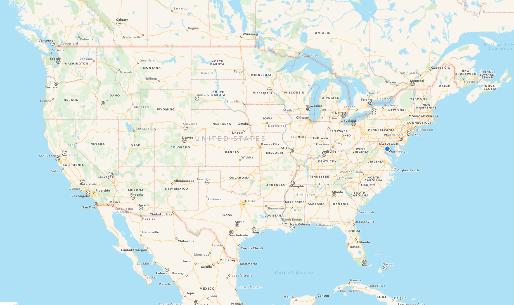

Design your own maps
We work at Mapbox. I'm going to talk about map design. Tatianas is going to talk about what it's like being a designer at Mapbox.
Saman makes tools at Mapbox
Tools for designers, developers + design maps.
Picture book mapIcon font unconventional.
DotsDots correspond to features: purple is coral, green is forest, red is land, blue water.
MidwayAt end, can show interactive.
Tatiana helps people understand Mapbox
Over to tatiana.
Everything you know about Mapbox you learned from TatianaOver to tatiana.
Learning from the past
I'm not an expert. Background is in art + design, not maps and cartography. Look to past for inspiration. As a map designer and as a product designer. As far back as you can go, cartographers were doing things that we still can't do with a computer. As you will see, Mapbox is still trying to catch up.
Maps are a means of expression
Maps are two different things. Art
Maps are practical tools
and Science.
The best maps are both
Bird's-eye-view Kyoto, Hatsusaburo Yoshida, 1947Silkscreen. Innovative design. Makes me feel something about the city. Made by someone who cares. POI callouts. Hoei - Bird's-eye-view Kyoto and its environs 1947. Maps are realy hard
Early days: maps as metaphors
We are going to start by looking at maps from before enlightenment and the scientific method. We can learn how maps are more than just a tool from getting to point A to point B.
Mappa Mundi, Hereford England, 1300
The maps say as much about the culture that made the map as they do about the geography. Data gathered by word of mouth from travelers, myths and stories. No rather than real surveying. Early maps tended to be careless about the ground truth. Religious imagery. The map was a way of expressing our replationship to the world, both physically and spiritually.
Iceland, Jan baptista, 1598Italian. Our understanding of the world was so incomplete, and no need for perfect data because travel was difficult.
Iceland, Jan baptista, 1598It was natural to add monsters to unexplored areas, or add locations that actually don't fit on the map but happen to be really important.
Mediterranean nautical map, Nikolao Skefalas, 1818Note the rhumbline network. Helped pilots orient their compases. This map was used for navigation.
1930 - 1970: Golden era of print maps
The best maps. Crafted by skilled drafters and cartographers. Three types: consumer road maps, picture maps, and thematic maps
Cars were suddenly widespread, we were shipping goods across the country, populations were growing and we needed to plan cities, and people went on road trips. The demand for maps was high.
Typical drafter, in the 1960s. Pen and ruler in hand.
Probably worked for one of the big 3: H.M. Gousha, General Drfting, or Rand McNally.
Consumer road maps
The Google maps of their time. Found in gas stations, travel agencies.
Road atlas for Standard Oil, H.M. Gousha, 1935Even everyday maps were beautiful, because they were hand made, and the person at the desk got to fudge the truth a little in order to create a better looking and easier to use map (standard oil - 1930). These maps are also interesting because they're designed to match the Standard Oil brand. The whole pamphlet works together:
Road atlas for Standard Oil, H.M. Gousha, 1935Cities moved to centers of roads, everything is generalized so things fit together better, and so the map has a natural rhythm. That sense of rhythm is hard to recreate in modern maps.
Road atlas for Standard Oil, H.M. Gousha, 1935The whole experience is unified
Route atlas for American Airlines, H.M. Gousha, 1939Banners, illustrations.
Golden Gate Exposition at San Francisco, Rand McNally, 1939Tailored for a specific place and time.
Picture maps
Playful, but also accurate and useful.
Exploring Switzerland, Eduard Imhof, 1939The maps have something to say about the place. Full of human warmth. Look at this and then open your phone and have a look at Switzerland in Google. Title is in three languages: German, Italian, French.
Exploring Switzerland, Eduard Imhof, 1939
American Airlines route Map, General Drafting, 1945For American Airlines. Cartographers were drafters. They knew how to draw.
American Airlines route Map, General Drafting, 1945
Thematic Maps
Other type of map. More about helping a viewer understand something about the world.
World Geographic Atlas, Rand McNally, 1953Hand-drawn hillshades. Label placement extends across the area it's labelling.
World Geographic Atlas, Rand McNally, 1953
Mount Everest, Eduard Imhof, 1962master of Hillshading. Figuring out how to model the shadows communicate depth on mountains. Combination of shading + blue contour lines. Balancing multiple layers, overlay effect.
Physiographic Diagram, Atlantic Ocean, Marie Tharp, 1957This map is beautiful. It's like an abstract painter's compositing. But it's also a breakthrough scientific work. Most detailed map of the ocean floor at the time it was made, and revealed previously unkown details about how continental drift works. Favorite details: the way the map breaks through the border.
Physiographic Diagram, Atlantic Ocean, Marie Tharp, 1957
Marie Tharp at work
Psychogeography guide of Paris, Guy Debord, 1957
In honor of the conference theme. Derive, map switch up (upside down, wrong city), ect. The maps highlight the way architecture and urban planning control behavior. The maps are designed to be tools for subverting that control. Bend reality in playful ways. This traditon lives on in some interesting ways today in web cartography.
1970 - Today
Late 20th century, the world's need for accurate update to date maps top priority. Maps are essential tools, so they have to work really really well. So they get standardized and optimized and we think about everything except for the poetry that was at the very root of cartography.
Modern drafter.
Computers let us make more accurate maps, faster.
Computers work faster than this guy, but they have no concept of beauty.
No beauty. We can try to encode it into algorithms, but we still can't beat a human hand.
Map in ArcGIS, 2016
Map creators typically aren't designers or drafters anymore, they're GIS technicians. The software is clunky, and does not default to beauty. We've been focused on solving data problems, not design problems.
Google & Apple: the new consumer road maps
The only two maps that seem to matter any more. Billions of dollars towards data quality.

Apple map, 2016Apple low zoom. Actually a good map, but when you need to do everything, you end up being boring.
Apple map, 2016Apple high zoom
Google map, 2016Google low zoom
Google map, 2016Google high zoom
Maps are the backgroundThe maps are fine. You could even say Apple's map is one of the best designed maps today. The important thing: the data is accurate, the maps work. But all the playfulness and distinctiveness in all the maps we just looked at is gone.
Mapbox is here to change things
Just like Google and Apple, we've solved the data problem (OSM). Do the hard parts, without taking away control, in order to map design accessible to designers. You can create emotional and meaningful experiences with maps, whether you're an artist or a marketing person.
Designing anything well is hard
We have tools that enable designers do everything now: web design, typography, layout, illustration, product design. If you know the fundamentals, you can design whatever you need to design.
Mapbox Studio, version one released November 2015
This is what Mapbox Studio looks like. Not just about tweaking colors, but having total control. It's available now, but we're constantly working on improvements. This is why history matters. Dig in, discover a technique (gradients on wayer, or knockout halos) and try to figure out how to make it possible for anyone.
The best map hasn't been designed yet
Mapbox Studio could be the tool used to design that map someday.
Thanks to
Digital library for International Research & the
David Rumsey collection
 Picture book map
Picture book map
 Midway
Midway
 Everything you know about Mapbox you learned from Tatiana
Everything you know about Mapbox you learned from Tatiana
 Mappa Mundi, Hereford England, 1300
Mappa Mundi, Hereford England, 1300
 Iceland, Jan baptista, 1598
Iceland, Jan baptista, 1598
 Iceland, Jan baptista, 1598
Iceland, Jan baptista, 1598
 Mediterranean nautical map, Nikolao Skefalas, 1818
Mediterranean nautical map, Nikolao Skefalas, 1818
 Road atlas for Standard Oil, H.M. Gousha, 1935
Road atlas for Standard Oil, H.M. Gousha, 1935
 Road atlas for Standard Oil, H.M. Gousha, 1935
Road atlas for Standard Oil, H.M. Gousha, 1935
 Road atlas for Standard Oil, H.M. Gousha, 1935
Road atlas for Standard Oil, H.M. Gousha, 1935
 Golden Gate Exposition at San Francisco, Rand McNally, 1939
Golden Gate Exposition at San Francisco, Rand McNally, 1939
 Exploring Switzerland, Eduard Imhof, 1939
Exploring Switzerland, Eduard Imhof, 1939
 American Airlines route Map, General Drafting, 1945
American Airlines route Map, General Drafting, 1945
 Mount Everest, Eduard Imhof, 1962
Mount Everest, Eduard Imhof, 1962
 Physiographic Diagram, Atlantic Ocean, Marie Tharp, 1957
Physiographic Diagram, Atlantic Ocean, Marie Tharp, 1957
 Psychogeography guide of Paris, Guy Debord, 1957
Psychogeography guide of Paris, Guy Debord, 1957
 Google map, 2016
Google map, 2016
 Maps are the background
Maps are the background
 Mapbox Studio, version one released November 2015
Mapbox Studio, version one released November 2015